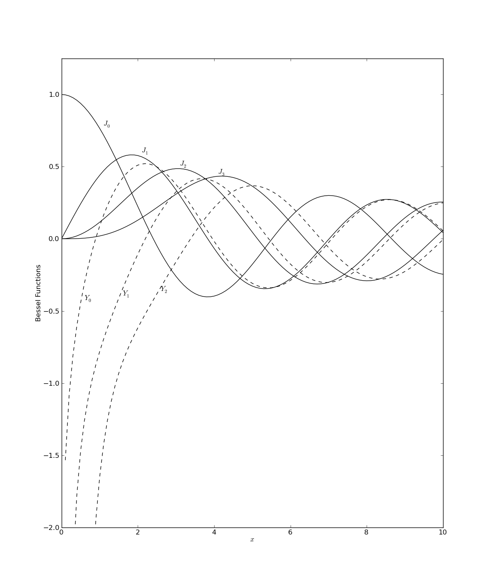
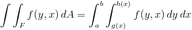
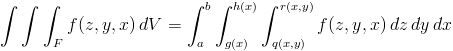
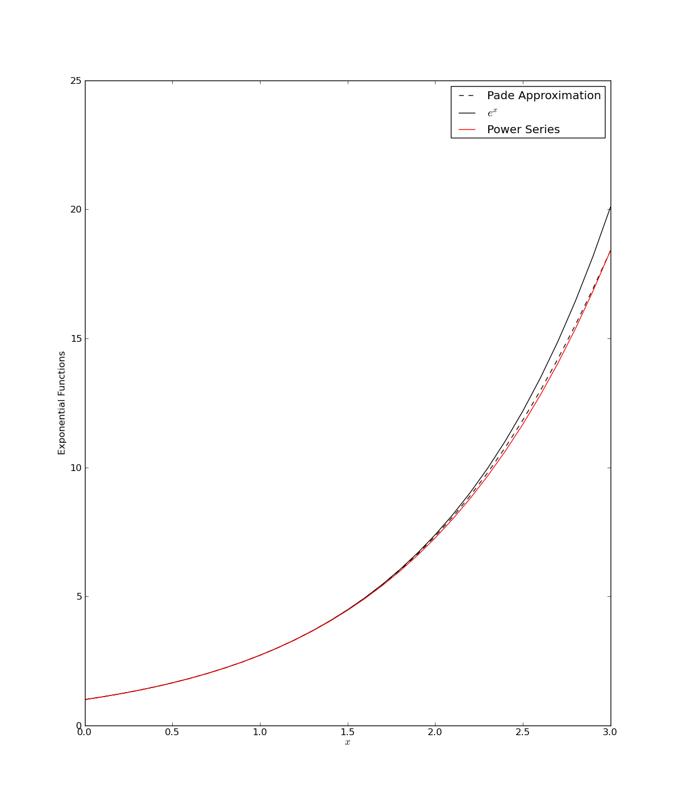
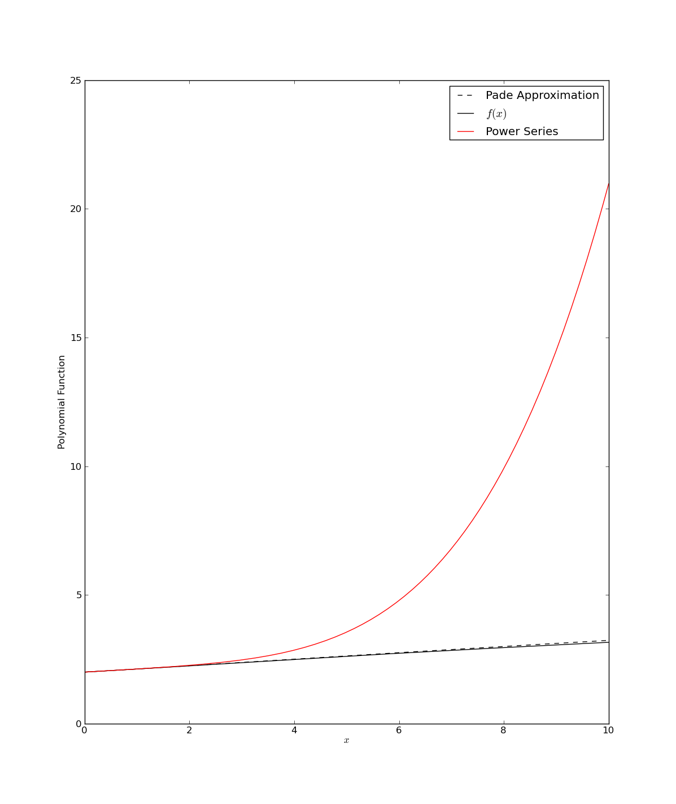

Using Scipy
Based on Lecture Materials By Anthony Scopatz
Scientific Python (SciPy) is a very robust package. It encompasses several modules ranging from the eternally practical to the quirky and cool. No matter what your discipline is, you can probably find a pre-made short cut using SciPy. With its considerable scope, there is no way we can cover all of its functionality in a single tutorial. That is what documentation is for http://docs.scipy.org/doc/! However, we can talk about the basics, show off some of its neater features, and generally teach the 'SciPy-way of doing things.'
The presentation on SciPy will follow five sections:
- SciPy Constants,
- Special Functions,
- Integration & ODEs,
- Pade Approximates,
- and Image Tricks.
In general, you can grab SciPy functionality via
python
import scipy
What you get is (from http://docs.scipy.org/doc/scipy/reference/):
python
-- Clustering package (**scipy.cluster**)
-- Constants (**scipy.constants**)
-- Fourier transforms (**scipy.fftpack**)
-- Integration and ODEs (**scipy.integrate**)
-- Interpolation (**scipy.interpolate**)
-- Input and output (**scipy.io**)
-- Linear algebra (**scipy.linalg**)
-- Maximum entropy models (**scipy.maxentropy**)
-- Miscellaneous routines (**scipy.misc**)
-- Multi-dimensional image processing (**scipy.ndimage**)
-- Orthogonal distance regression (**scipy.odr**)
-- Optimization and root finding (**scipy.optimize**)
-- Signal processing (**scipy.signal**)
-- Sparse matrices (**scipy.sparse**)
-- Sparse linear algebra (**scipy.sparse.linalg**)
-- Spatial algorithms and data structures (**scipy.spatial**)
-- Special functions (**scipy.special**)
-- Statistical functions (**scipy.stats**)
-- Image Array Manipulation and Convolution (**scipy.stsci**)
-- C/C++ integration (**scipy.weave**)
SciPy Constants, crawl before you walk!
A plethora of important, fundamental constants can be found in scipy.constants. NOTE: However, this module is not automatically included when you import scipy. Still, some very basic pieces of information are given as module attributes.
The following, for example:
```python import scipy.constants import math
print("SciPy thinks that pi = %.16f"%scipy.constants.pi) print("While math thinks that pi = %.16f"%math.pi) print("SciPy also thinks that the speed of light is c = %.1F"%scipy.constants.c) ```
will return
python
>>> SciPy thinks that pi = 3.1415926535897931
>>> While math thinks that pi = 3.1415926535897931
>>> SciPy also thinks that the speed of light is c = 299792458.0
However, the real value of SciPy Constants is its enormous physical constant database. These are of the form: scipy.constants.physical_constants[name] = (value, units, uncertainty).
For example, the mass of an alpha particle is:
```python
scipy.constants.physical_constants["alpha particle mass"] (6.6446564999999997e-27, 'kg', 1.1e-33) ```
How can you tell what the key is for this function? My favorite way is with the scipy.constants.find() method.
python
scipy.constants.find("light")
gives :
python
['speed of light in vacuum']
But buyer beware! Let's look at the speed of light again.
python
>>> print("c = %s"%str(scipy.constants.physical_constants["speed of light in vacuum"]))
>>> c = (299792458.0, 'm s^-1', 0.0)
The uncertainty in c should not be zero! Right? Wrong. The meter is in fact set by the speed of light in a vacuum. So there is, by definition, no error. However, this has not always been the case. Moreover, any actual determination of the c or the meter has a measurement uncertainty, but SciPy does not acknowledge it.
BASIC LESSON: As always, pay attention.
Check http://docs.scipy.org/doc/scipy/reference/constants.html for a complete constants listing.
The above code is reproduced concisely in the constants.py file found in the SciPy directory of your PyTrieste repository.
SciPy Special Functions, walk before you run!
Code that numerically approximates common (and some not-so-common) special functions can be found in scipy.special. Here you can find things like error functions, gamma functions, Legendre polynomials, etc. But as a example let's focus on my favorites: the Bessel functions.
```python from scipy.special import * import numpy as np from matplotlib import pyplot as plt
x = np.arange(0.0, 10.1, 0.1)
for n in range(4): j = jn(n, x) plt.plot(x, j, 'k-') plt.text(x[10(n+1)+1], j[10(n+1)], r'$J_%r$'%n)
for n in range(3): y = yn(n, x) plt.plot(x, y, 'k–') plt.text(x[10(n)+6], y[10(n)+5], r'$Y_%r$'%n)
plt.axis([0, 10, -2, 1.25]) plt.xlabel(r'$x$') plt.ylabel("Bessel Functions")
plt.show() ```
These 20-ish lines of code should produce :

Note that the figure that was created here is a reproduction of Figure 6.5.1 in ''Numerical Recipes'' by W. H. Press, et al… (http://www.nr.com/).
Check out http://docs.scipy.org/doc/scipy/reference/special.html for a complete listing of special functions.
The above code is reproduced concisely in special_functions.py which can be found in the SciPy directory of your PyTrieste repository.
SciPy Integration, run before you glide!
Tools used to calculate numerical, definite integrals may be found in the integrate module. There are two basic ways you can integrate in SciPy:
- Integrate a function,
- Integrate piecewise data.
First, let's deal with integration of functions. Recall that in Python, functions are also objects. Therefore you can pass functions as arguments to other functions! Just make sure that the function that you want to integrate returns a float, or at the very least, an object that has a __float__() method.
Integration Example: 1D
The simplest way to compute a functions definite integral is via the quad(…) function. The script
```python import scipy.integrate #For kicks, let's also grab import scipy.special import numpy def CrazyFunc(x): return (scipy.special.i1(x) - 1)**3
print("Try integrating CrazyFunc on the range [-5, 10]…")
val, err = scipy.integrate.quad(CrazyFunc, -5, 10)
print("A Crazy Function integrates to %.8E"%val) print("And with insanely low error of %.8E"%err) ```
will return
python
>>> Try integrating CrazyFunc on the range [-5, 10]...
>>> A Crazy Function integrates to 6.65625226E+09
>>> And with insanely low error of 3.21172897E-03
Integration Example: Infinite Limits
You can also use scipy.integrate.Inf for infinity in the limits of
integration. For example, try integrating e\^x on [-inf, 0]:
python
>>> print("(val, err) = " +
str( scipy.integrate.quad(scipy.exp, -scipy.integrate.Inf, 0.0) ))
will return :
python
>>> (val, err) = (1.0000000000000002, 5.8426067429060041e-11)
Integration Example: 2D
Two dimensional integrations follow similarly to the 1D case. However, now we need to use the dblquad( f(y,x), …) function instead of simply quad( f(x), …). Because a picture is worth 10\^3 words, SciPy computes the right-hand side of the following equation:

More information on the justification of this integral may be found at http://en.wikipedia.org/wiki/Order_of_integration_(calculus). For example, let's try to integrate the surface area of a unit sphere:
```python def dA_Sphere(phi, theta): return scipy.sin(phi)
print("Integrate the surface area of the unit sphere…") val, err = scipy.integrate.dblquad(dA_Sphere, 0.0, 2.0*scipy.pi, lambda theta: 0.0, lambda theta: scipy.pi ) print("val = %.8F"%val) print("err = %.8E"%err) ```
This will return :
python
>>> Integrate the surface area of the unit sphere...
>>> val = 12.56637061
>>> err = 1.39514740E-13
There are a couple of subtleties here. First is that the function you are integrating over is defined as f(y,x) and NOT the more standard f(x,y). Moreover, while x's limits of integration are given directly [0, 2pi]**,**y**'s limits have to be functions**[g(x), h(x)]* (given by the 'lambdas' here). This method of doing double integrals allows fory* to have a more complicated edge in**x* than a simple point. This is great for some functions but a little annoying for simple integrations. In any event, the above integral computes the surface are of a unit sphere to be *4pi** to within floating point error.
Integration Example: 3D
Three dimensional integration is more similar to 2D than 1D. Once again, we define our function variables in reverse order, f(z, y, x), and integrate using tplquad( f(z, y, x) ). Moreover, z has limits of integration defined by surfaces give as functions [q(x,y), r(x,y)]. Thus, tplquad(…) integrates the right-hand side of :

To continue with the previous example, let's try integrating the volume of a sphere. Take the radius here to be 3.5.
```python def dV_Sphere(phi, theta, r): return r * r * dA_Sphere(phi, theta)
print("Integrate the volume of a sphere with r=3.5…") val, err = scipy.integrate.tplquad(dV_Sphere, 0.0, 3.5, lambda r: 0.0, lambda r: 2.0*scipy.pi, lambda x, y: 0.0, lambda x, y: scipy.pi) print("val = %.8F"%val) print("err = %.8E"%err) ```
will return:
python
>>> Integrate the volume of a sphere with r=3.5...
>>> val = 179.59438003
>>> err = 1.99389816E-12
A simple hand calculation verifies this result.
Integration Example: Trapazoidal
Now, only very rarely will scientists (and even more rarely engineers) will truely 'know' the function that they wish to integrate. Much more often we'll have piecewise data that we wish numerically integrate (ie sum an array y(x), biased by array x). This can be done in SciPy through the trapz(…) function.
python
y = range(0, 11)
print("Trapazoidally integrate y = x on [0,10]...")
val = scipy.integrate.trapz(y)
print("val = %F"%val)
will return:
python
>>> Trapazoidally integrate y = x on [0,10]...
>>> val = 50.000000
The above takes a series of y-values that are implicitly spaced 1-unit apart in x and 'trapazoidally integrates' them. Basically, just a sum.
However, you can use the x= [0, 3,…] or dx = 3 argument keywords to explicitly declare different spacings in x. For example, with y = x\^2:
python
x = numpy.arange(0.0, 20.5, 0.5)
y = x * x
print("Trapazoidally integrate y = x^2 on [0,20] with half steps...")
val = scipy.integrate.trapz(y, x)
print("val = %F"%val)
python
>>> Trapazoidally integrate y = x^2 on [0,20] with half steps...
>>> val = 2667.500000
python
print("Trapazoidally integrate y = x^2 with dx = 0.5...")
val = scipy.integrate.trapz(y, dx = 0.5)
print("val = %F"%val)
python
>>> Trapazoidally integrate y = x^2 with dx = 0.5...
>>> val = 2667.500000
Integration Example: Ordinary Differential Equations
Say that you have an ODE of the form dy/dt = f(y, t) that you ''really'' need integrated. Then you, my friend, are in luck! SciPy can do this for you using the scipy.integrate.odeint function. This is of the form:
python
odeint( f, y0, [t0, t1, ...])
For example take the decay equation: (y, t) = - lambda * y
We can then try integrating this using a decay constant of 0.2`:
```python def dDecay(y, t, lam): return -lam*y
vals = scipy.integrate.odeint( lambda y, t: dDecay(y, t, 0.2), 1.0, [0.0, 10.0] ) print("If you start with a mass of y(0) = %F"%vals[0][0]) print("you'll only have y(t= 10) = %F left."%vals[1][0]) ```
This will return
python
>>> If you start with a mass of y(0) = 1.000000
>>> you'll only have y(t= 10) = 0.135335 left.
Check out http://docs.scipy.org/doc/scipy/reference/integrate.html for more information on integreation.
The above code is reproduced concisely in integrate.py, which can be found in the SciPy direcotry of your PyTreiste repository.
SciPy Pade, glide before you fly!
As you have seen, SciPy has some really neat functionality that comes
stock. Oddly, some of the best stuff is in the miscellaneous module
accessed via import scipy.misc. What follows is a brief explanation of the
Pade Approximant (http://en.wikipedia.org/wiki/Padé_approximant) and how to
utilize it in SciPy.
Most people are familar with the polynomial expansions of a function:
f(x) = a + bx + cx^2 + ...
Or a Taylor expansion:
f(x) = sum( d^n f(a) / dx^n (x-a)^n /n! )
However, there exists the lesser known, more exact Pade approximation. This basically splits up a function into a numerator and a denominator.
f(x) = p(x) / q(x)
Then, you can approximate p(x) and q(x) using a power series. However to
generate p(x) and q(x) of order N, you first need the
polynomial approximation of f(x) to order 2N+1 (for when p and
q are expanded to the same order). Thus the Pade approximate is a way to
squeeze greater orders of accuracy out of another, more expensively
gained approximation. A more complete treatment is available in Section
5.12 in ''Numerical Recipes'' by W. H. Press, et al…
(http://www.nr.com/). The strength of this method
is demonstrated though examples and figures.
First let's take the case for where f(x) = e\^x.
```python import scipy.misc import numpy as np from matplotlib import pyplot as plt
#Let's expand e^x to fifth order and record the coefficents e_exp = [1.0, 1.0, 1.0/2.0, 1.0/6.0, 1.0/24.0, 1.0/120.0]
#The Pade coefficients are given simply by, p, q = scipy.misc.pade(e_exp, 2) #p and q are of numpy's polynomial class #So the Pade approximation is given by def PadeAppx(x): return p(x) / q(x)
#Let's test it… x = np.arange(0.0, 3.1, 0.1)
e_exp.reverse() e_poly = np.poly1d(e_exp)
plt.plot(x, PadeAppx(x), 'k–', label="Pade Approximation") plt.plot(x, scipy.e**x, 'k-', label=r'$e^x$') plt.plot(x, e_poly(x), 'r-', label="Power Series")
plt.xlabel(r'$x$') plt.ylabel("Exponential Functions")
plt.legend(loc=0)
plt.show() ```
The above script, pade1.py, generates the following figure :

Now the gains from using the Pade approximant for an exponential here seem slight. This is because the original exponential expansion is rather well defined. Still the Pade version in this case has two important advantages:
-
The power series version of e\^x would still require about twice as many terms to gain that slight increase in accuracy that the Pade gives.
-
If instead x were replaced by the matrix A, then e\^A could be calculated with about half as many multiplications and sums using Pade rather than a polynomial. Success!
However, Pade's real power can be seen when approximating a different function. Let's try approximating a rougher function…
```python
import scipy.misc import numpy as np from matplotlib import pyplot as plt
def f(x): return (7.0 + (1+x)(4.0/3.0))(1.0/3.0)
#Through someone else's labors we know the expansion to be… f_exp = [2.0, 1.0/9.0, 1.0/81.0, -49.0/8748.0, 175.0/78732.0]
#The Pade coefficients are given simply by, p, q = scipy.misc.pade(f_exp, (5-1)/2) #p and q are of numpy's polynomial class #So the Pade approximation is given by def PadeAppx(x): return p(x) / q(x)
#Let's test it… x = np.arange(0.0, 10.01, 0.01)
f_exp.reverse() f_poly = np.poly1d(f_exp)
plt.plot(x, PadeAppx(x), 'k–', label="Pade Approximation") plt.plot(x, f(x), 'k-', label=r'$f(x)$') plt.plot(x, f_poly(x), 'r-', label="Power Series")
plt.xlabel(r'$x$') plt.ylabel("Polynomial Function")
plt.legend(loc=0)
plt.show() ```
The above script, pade2.py, generates the following figure 
Note, that this example is again taken from Section 5.12 in Numerical Recipes by W. H. Press, et al (http://www.nr.com/).
Check out http://docs.scipy.org/doc/scipy/reference/misc.html#scipy.misc.pade for more details on SciPy's Pade interface.
SciPy Image Tricks, fly before you….You can do that?!
For some reason that has yet to be explained to me, SciPy has the
ability to treat 2D & 3D arrays as images. You can even convert PIL
images or read in external files as numpy arrays! From here, you can
fool around with the raw image data at will. Naturally, this
functionality is buried (again) within the miscellaneous module.
First let's read in an image file. For now make it a JPEG. From Wikipedia. Of a bunny. http://en.wikipedia.org/wiki/File:JumpingRabbit.JPG
python
import scipy.misc
img = scipy.misc.imread("image.jpg")
#Note that this really is an array!
print(str(img))
```python
[[[130 174 27] [129 173 24] [127 171 22] …, [147 192 41] [146 190 41] [146 190 41]]
[[137 177 29]
[133 175 27] [130 173 21] …, [147 192 37] [149 194 41] [149 194 41]]
[[141 177 29] [137 176 25] [130 174 19] …, [148 194 34] [149 195 35] [149 195 35]]
…, [[ 77 126 1] [ 87 137 14] [ 85 139 0] …, [ 77 128 0] [ 99 159 3] [128 183 17]]
[[ 86 139 0] [ 90 141 12] [ 82 136 0] …, [ 66 114 2] [102 160 0] [119 174 11]]
[[ 89 140 0] [ 79 129 8] [ 87 139 2] …, [ 67 117 4] [ 81 138 0] [117 172 18]]] ```
We can now apply some basic filters…
python
img = scipy.misc.imfilter(img, 'blur')
We can even rotate the image, counter-clockwise by degrees.
python
img = scipy.misc.imrotate(img, 45)
And then, we can rewrite the array to an image file.
python
scipy.misc.imsave("image1.jpg", img)
These functions produce the following image:
Because the array takes integer values from 0 - 255, we can easily define our own filters as well! For instance, you could write a two-line function to inverse the image…
python
def InverseImage(imgarr):
return 255 - imgarr
#Starting fresh we get...
img = scipy.misc.imread("image.jpg")
img = scipy.misc.imrotate(img, 330)
img = InverseImage(img)
scipy.misc.imsave("image2.jpg", img)
Having this much fun, the rabbit becomes a twisted shade of its former self!
Check out http://docs.scipy.org/doc/scipy/reference/misc.html for a complete listing of associated image functions.
The code above can be found in the image_tricks.py file in the SciPy directory of your repository..